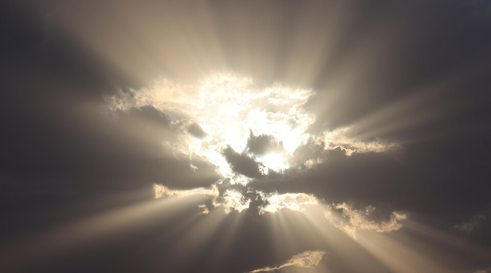

Summary: We extend our CS 184 Homework 3 path tracer with participating media. We add delta-tracking volumetric path tracing through a procedurally animated, heterogeneous density field and a Henyey-Greenstein phase function. Our target scenes are a backlit cloud with a silver lining, and colored light shafts (god rays) streaming through a window or stained glass into a drifting cloud.
Team members: Diego Jiang, Ralfi Bahar, Yuheng Wang, Diego Vargas de Souza
Course enrollment: CS184

Reference photo (not our render): “Crepuscular rays over the region of Tikveš” by Kiril Simeonovski, via Wikimedia Commons, licensed CC BY 4.0. Cropped.
2. Problem Description
Context. Our HW3 renderer only handles light interacting at surfaces. Rays travel through empty space and change only when they hit a BSDF. Real clouds, fog, smoke, and atmospheric light shafts need light to be absorbed and scattered inside a volume. A surface-only renderer cannot produce them, because there is no surface for the light to interact with.
Why it matters. Volumetric scattering is what makes skies, clouds, haze, and “sunbeams through a window” look real. Production renderers treat it as a core feature. It also exercises the same Monte Carlo machinery we learned in class (importance sampling, unbiased estimators, variance) in a new setting.
What is challenging.
Unbiased sampling in heterogeneous media. The distance to the next scattering event has no closed form when density varies in space. We need null-collision methods such as delta tracking, and we must get the probabilities right to avoid bias.
Noise from multiple scattering. The bright, soft look of a cloud comes from many bounces inside the medium. Path length and variance grow with optical thickness.
Strongly forward-scattering phase functions. Cloud droplets scatter mostly forward. This produces the silver lining, but it makes the light-transport integrand peaky and noisy, so good phase function sampling and light sampling matter.
Light shafts. Shafts form when occluders (window frames, glass) shape the light entering a medium. Connecting scattering points to the light through occluders needs careful shadow-ray transmittance estimation. Connecting through refractive glass is harder still.
Rendering time. Volumes need many more ray-density lookups per path than surfaces. We must keep animation frames affordable on laptops.
General approach. We add a medium abstraction to our existing path tracer. We validate it on simple cases with known answers (homogeneous media, analytic transmittance). Then we move to a noise-based heterogeneous cloud, add lighting for the silver lining and shafts, and finally animate the density field. Riskier optical effects (dispersion, spectral rendering) come last and are optional.
Starting Point vs. What We Build
What we start with (our HW3 Project 3-1 path tracer, C++):
Surface path tracing with global illumination (depth cap and Russian roulette)
Ray generation, ray-scene intersection, and a BVH
Materials: diffuse and emission BSDFs only. Our HW3-1 code has no mirror, glass, or microfacet BSDFs, and no environment light.
Area lights, direct lighting with light sampling, and adaptive sampling
What we build ourselves:
A medium and volume-integration layer (absorption and scattering coefficients, transmittance, medium transitions at boundaries)
Density grids and procedural noise (Perlin/Worley-style fractal noise) for the cloud density
Henyey-Greenstein phase function evaluation and importance sampling
Delta tracking (Woodcock tracking) for free-flight sampling, plus ratio tracking for shadow-ray transmittance
Light-shaft sampling (volumetric next-event estimation toward the light through occluders)
Time-varying density animation and an animation render script
A simple non-refracting tinted-transmission material (a thin pane that multiplies light by a per-channel color), and later, as a stretch goal, refractive and dispersive glass
An evaluation harness: convergence plots, timing runs, and analytic checks
3. Goals and Deliverables
3.1 What we plan to deliver (baseline)
We believe this is achievable in about four weeks, with buffer for problems.
Homogeneous medium. Absorption and scattering, with free-flight sampling and transmittance. Validated against the analytic slab transmittance.
Henyey-Greenstein phase function with importance sampling. Validated by comparing sampled-direction histograms to the pdf and checking that the mean cosine equals g.
Heterogeneous medium with delta tracking through a density grid, with a majorant (maximum density) bound. We use ratio tracking for shadow-ray transmittance.
A procedural cloud. The density comes from fractal noise combined with a shaping function so it reads as a cumulus-like blob. We cap the number of bounces and measure the effect.
A backlit cloud with a visible silver lining. We render it at several values of g to show the effect.
A static god-ray scene. A bright area light behind a window with mullions or openings shines into a hazy room or a cloud. Window shapes can include a simple tinted pane that absorbs per color channel.
A short animated density sequence. The noise field is evolved over time (for example by moving the sample position through the noise and warping it), rendered as a frame sequence and encoded as a short video.
Images and animations we will produce:
Homogeneous medium test renders at several densities, and the transmittance validation plot
Phase function comparison images for several values of g (for example g = 0, 0.5, 0.8, 0.9, with the exact set decided later)
The backlit cloud (hero image) and a front-lit comparison
A static god-ray image and a variant with a colored pane
An animated cloud, with and without the light shafts (a few seconds)
How we will measure quality and performance:
Correctness: Compare transmittance through a homogeneous slab against exp(−σt·d). Compare heterogeneous transmittance against a numerically integrated optical depth along the ray. Run a white-furnace-style test (scattering albedo 1, uniform illumination) to check energy conservation.
Convergence: Plot variance or RMSE against sample count, with a high-sample render as the reference. We will check that the error falls at roughly 1/√N as expected for Monte Carlo.
Performance: Plot render time against density-grid resolution and against the number of bounces. We state our target frame times only after we have measured the baseline, so we make no numeric promises yet.
Visual comparison: Side-by-side renders at different g values and different scattering orders.
Questions we plan to answer:
How much does forward scattering (g) contribute to the silver lining, and how does the effect depend on the number of scattering bounces?
How does delta tracking compare to fixed-step ray marching in noise and cost for the same image?
How does the density-grid resolution affect visual quality and render time?
How noisy are light shafts with and without volumetric next-event estimation, and what does it cost?
3.2 What we hope to deliver (aspirational)
These are riskier and only attempted once the baseline works.
Spinning prism or stained-glass window with dispersion. The prism produces rainbow-colored shafts, and a rotating glass element animates the colored light. This needs refractive and glass BSDFs, which our HW3-1 code does not include, so we would write them first. Our estimators can also no longer connect shadow rays through refractive glass directly, so noise is a real risk. Direct connections work through apertures and tinted, non-refracting panes, but not through refractive glass.
Spectral or per-wavelength rendering. Wavelength-dependent index of refraction and absorption. We plan to start with a few discrete wavelengths or per-RGB-channel absorption before attempting anything more.
Multiple-scattering tricks to reduce cost, such as Russian roulette tuned for media, or a cheaper approximation for high-order scattering compared against our reference.
A denoiser, for example a simple edge-aware filter on our noisy low-sample volume renders.
An interactive preview at low resolution (for example a progressive viewer with adjustable g and density).
A comparison against a reference renderer. For example, a matching scene in a renderer that supports volumes, if we have time to set one up.
4. Schedule
No late days are allowed on any part of the final project.
Week
Dates
Tasks
Proposal
Tue Nov 10 (due); Fri Nov 13 staff feedback
Submit proposal; incorporate staff feedback; set up repo and shared task list
1
Nov 10–16
Medium interface and volume infrastructure in the HW3 code
Homogeneous medium: free-flight sampling, absorption and scattering
Transmittance tests against the analytic slab
Density-grid data structure and noise generator (Perlin/Worley), scene setup and test scenes
2
Nov 17–22
Heterogeneous density with delta tracking and majorant bound
HG phase function with importance sampling, and its statistical tests
Ratio-tracking shadow rays, convergence plots
Graded Milestone due Sun Nov 22: report webpage, 1-minute video with every member speaking, 2–3 slides
Time-varying density and the animation render script
Performance experiments (time vs. grid resolution, delta tracking vs. ray marching)
Thanksgiving is Thu Nov 26. We plan lighter work that week and start long renders before then.
4
Nov 30–Dec 6
Aspirational work (prism or stained glass, spectral absorption, denoiser) only if the baseline is complete
Final high-sample renders and animation frames; encode video
Final report webpage, plots, and the final video
Final Report + Video due Sun Dec 6
Presentations
Mon Dec 7 and Tue Dec 8
5-minute presentation including a 1-minute demo
We plan to finish all baseline renders by around Nov 29, so the last week is for polish and the report. We queue long renders early, since they are the main schedule risk.
5. Resources
Platform. C++ on top of our CS 184 HW3 path tracer. We use the same build system and course framework. Animation frames are rendered as image sequences and encoded into video with standard tools.
Starting code. Our CS 184 Project 3-1 path tracer (GitHub repo hw3-rb in the course’s cal-cs184-student organization).
Hardware. We assume CPU rendering with multithreading, and we budget render time accordingly. GPUs are optional and only relevant if we attempt the interactive preview.
Diego Vargas de Souza: B650 desktop, NVIDIA GeForce RTX 5070
Yuheng Wang: MacBook Pro M5
Ralfi Bahar: MacBook Pro M2
Diego Jiang: ROG Zephyrus, NVIDIA GeForce RTX 5080
Software. Our HW3 codebase, our own noise and grid code, and optionally OpenVDB for loading or storing density grids. We would only use OpenVDB if it does not slow us down.
Rendering Participating Media with Bidirectional Path Tracing, Eric P. Lafortune and Yves D. Willems, Eurographics Rendering Workshop 1996 https://lafortune.eu/publications/Porto.html